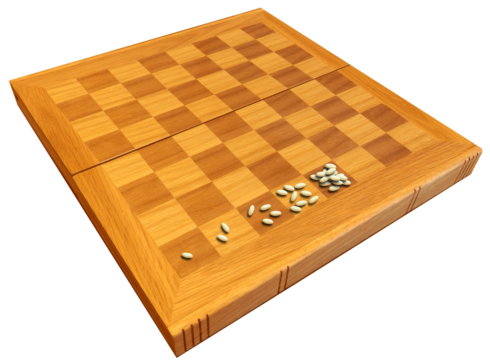
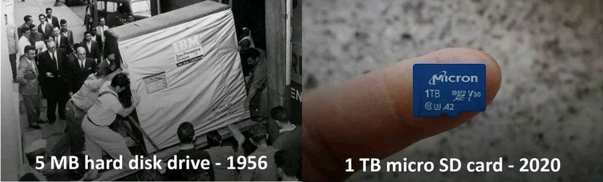

Real problems rarely come with a single conversion. Usually we need to combine a few ideas: powers of ten, unit conversions, areas and volumes. Each exercise below has several parts, and each part uses the results of the previous ones, so it’s a good place to practice splitting a big problem into small, manageable steps.
As before, try each part on your own first, and only then open the two boxes below it: the setup (starting point, goal and conversion information) and the computation.
12.1 the chessboard and the wheat
An old legend tells of the inventor of chess, who showed his new game to an Indian king. The king was so pleased that he promised to pay the inventor anything he wanted. The inventor asked for a modest reward in wheat grains: one grain for the first square of the chessboard, two grains for the second square, four for the third, eight for the fourth, and so on, doubling at every square, all the way to the 64th square.
The king agreed immediately, thinking that this was a cheap price. He had no idea of how large the number really is. If you add up the grains on all 64 squares, you get
1 + 2 + 4 + 8 + \dots + 2^{63} = 2^{64} - 1

We will find out just how much wheat that is. Here is the data we’ll need:
A cup of 100 \text{ mL} holds about 1219 wheat grains.
The area of India is 3{,}286{,}592 \text{ km}^2.
A typical wheat grain is 6.5 \text{ mm} long.
Light travels 299{,}792{,}458 \text{ m} in one second, which we can round to 3.00 \cdot 10^8 \text{ m/s}.
The nearest star to our Sun, Proxima Centauri, is 4.2 light-years away. A light-year is the distance that light travels in one year.
a. how many grains?
The total number of grains is 2^{64} - 1. Estimate this number without a calculator, using the approximation 2^{10} \approx 10^3.
Notesolution
First, subtracting 1 from a number with twenty digits changes nothing that we can measure, so we can safely forget the “-1”.
Now we split 2^{64} so that we can use 2^{10}, using the power rules:
The exact value is 2^{64} - 1 \approx 1.84 \cdot 10^{19}. Our estimate is a bit low, because 2^{10} = 1024 is slightly more than 1000, and this small error is multiplied six times. Still, we got the right order of magnitude, without a calculator. That’s about eighteen and a half quintillion grains.
In the following parts we will use the exact value, N \approx 1.84 \cdot 10^{19} grains.
b. a sea of wheat
Imagine that all those grains are spread evenly over the entire area of India. How deep is the layer of wheat?
Tipsetup: starting point, goal, conversion
There are two things to find here: the total volume of the wheat, and the area of India in the right units. Then we combine them.
The second line comes from 1 \text{ mL} = 1 \text{ cm}^3 and 1 \text{ m} = 100 \text{ cm}, so 1 \text{ m}^3 = (100)^3 \text{ cm}^3 = 10^6 \text{ cm}^3.
The area is given in \text{km}^2, and we want \text{m}^2. Remember that the prefix is also squared, 1 \text{ km}^2 = (10^3 \text{ m})^2 = 10^6 \text{ m}^2 (see areas and volumes).
After all that, the sea of wheat that covers a whole subcontinent is only about knee-high! The number of grains is astronomical, but so is the area of India.
c. how long is a light-year?
Before we compare the wheat to the distance to the stars, we need to know how far a light-year is in meters. This is an intermediate step, and we can handle it with a short chain.
So one light-year is about 9.5 thousand billion kilometers.
d. the wheat line to the stars
Now place all the grains one after the other in a single straight line, each grain along its length. About how many one-way trips from the Sun to Proxima Centauri (the nearest star, 4.2 light-years away) would this line cover?
The grains would make about three one-way trips from the Sun to the nearest star. Notice that the answer is very close to a whole number, but our inputs (like 6.5 \text{ mm} and 4.2 light-years) were rounded, so the honest answer is “about three”, not “exactly three”.
what we learned
The same number, N \approx 1.84 \cdot 10^{19}, went into two different chains. First we turned it into a volume and then into a depth, and later into a length and then into a number of trips.
A long chain is just a few short ones glued together. When a problem needs an intermediate quantity (like the length of a light-year), stop, solve it separately, and then use it as conversion information.
Areas need squared prefixes (1 \text{ km}^2 = 10^6 \text{ m}^2), and volumes need cubed ones.
12.2 a comet hits the earth
The movie Don’t Look Up (2021) is about a giant comet on a collision course with Earth. In the movie, the main character, played by Leonardo DiCaprio, warns that “if the comet hits the Earth, the impact will be equal to a billion Hiroshima [atomic bombs].” Is that reasonable? What else would happen if the comet were to melt into the oceans? We will use some numbers from the movie, and some from the real world, to find out.
The comet is a ball of ice with a diameter of 9 \text{ km} (we’ll assume that it’s a perfect sphere) and a density of 0.9 \text{ g/cm}^3. Here is the rest of the data we’ll need:
The density of liquid water is 1 \text{ g/cm}^3.
The oceans cover 71\% of the surface of the Earth, and the radius of the Earth is 6371 \text{ km}.
A sphere of radius r has volume V = \frac{4}{3}\pi r^3 and surface area A = 4 \pi r^2.
The Hiroshima bomb had an explosive power of 15 kilotons of TNT. One ton of TNT is defined as an amount of energy of 4.184 \cdot 10^9 \text{ J}.
An object with mass m and speed v has kinetic energy E = \frac{1}{2} m v^2.
a. how much does the comet weigh?
Find the mass of the comet, in kilograms.
Tipsetup: starting point, goal, conversion
We’ll do this in two steps. First we find the volume of the comet from its radius, and then we use the density as a conversion factor from volume to mass.
Starting point: the volume of the comet, which we find from its radius, r = 9 \text{ km}/2 = 4.5 \text{ km}.
Suppose that the whole comet melts and all the water ends up in the oceans of the Earth. By how many meters would the sea level rise?
Tipsetup: starting point, goal, conversion
Melting doesn’t change the mass: the mass of the water is the same as the mass of the ice that we found in part a. But the volume changes, because water and ice have different densities. That’s why we need to use the density of water, and not of ice.
We also need the area of the oceans, and then, if the water forms a thin layer over this area, the rise in sea level is the volume of water divided by this area, as we did in the wheat exercise: h = V/A.
Starting point:3.44 \cdot 10^{14} \text{ kg} of water.
That’s about one millimeter! A gigantic comet, 9 kilometers across, and the sea level would hardly change. The oceans are enormous.
What if we had used the density of ice by mistake, and just taken the volume of the comet, 3.82 \cdot 10^{11} \text{ m}^3? We’d get about 1.05 \text{ mm}, that’s 10% too high. It’s a small difference here, but it’s a good habit to always ask what happens to the volume when something melts.
c. a billion bombs
How much energy is a billion (10^9) Hiroshima bombs? Give the answer in joules.
Assume that the energy released in the impact (a billion Hiroshima bombs) is the kinetic energy of the comet. What is the speed of the comet at the moment of impact? Give the answer in km/h.
Tipsetup: starting point, goal, conversion
This time we need a formula, the kinetic energy E = \frac{1}{2}mv^2, which we solve for the speed:
v = \sqrt{\frac{2E}{m}}
Before plugging in numbers, we check the units. The joule is \text{J} = \text{kg}\cdot\text{m}^2/\text{s}^2 (see dimensions), so:
That’s about 19 \text{ km/s}, more than 50 times the speed of sound. It’s fast, but it’s the right ballpark for comets and asteroids that travel through the solar system, which typically hit the Earth with speeds of tens of kilometers per second. So the movie’s claim is plausible: to release the energy of a billion Hiroshima bombs, a 9-kilometer comet only needs a speed that is perfectly normal for objects like it.
12.3 let them eat brioche
“If they have no bread, let them eat brioche.” The philosopher Jean-Jacques Rousseau quoted this sentence, which he attributed to a “great princess” of eighteenth-century France. It became a symbol of the distance between the aristocracy and ordinary people. Brioche is a rich, buttery bread, and it was certainly not something that a poor family could afford.
In the recipe book Le cuisinier impérial (1806), on page 366, we can find the list of ingredients for a brioche:
ingredient
flour
yeast
salt
butter
eggs
quantity
1
1
1
2
12
unit
quart
once
once
livre
—
In those days, before the French Revolution, the SI system didn’t exist yet, and the recipe uses old French units:
The quart is a unit of volume. It is a quarter of a boisseau, and 1 \text{ boisseau} = 12.7 \text{ L}.
The livre is a unit of mass, and 1 \text{ livre} = 489 \text{ g}. It is made of 16once, so the once is a unit of mass too.
We’ll need some more data:
One \text{cm}^3 of flour has a mass of 0.78 \text{ g}.
The mass of a quart of butter is 71 once.
In 1784, the population of France was 24.8 million people.
One brioche is enough to feed 7 people for a day.
a. the dry ingredients
What is the total mass of the dry ingredients (flour, yeast and salt) of one brioche? Give the answer in kilograms.
Tipsetup: starting point, goal, conversion
The flour is given as a volume (in quarts) and the yeast and salt are given as masses (in once), so we need two separate chains, and then we add the results, in the same unit.
Almost all of the mass is flour. The yeast and salt together are only about 2% of the dry ingredients.
b. how many brioches?
Suppose that the entire population of France in 1784 ate nothing but brioche. How many brioches would be needed to feed everyone for a whole year?
Tipsetup: starting point, goal, conversion
Starting point:24.8 \cdot 10^6 people.
Goal: the number of brioches in a year.
Conversion information:
1 \text{ brioche} \longleftrightarrow 7 \text{ people for 1 day} \\
1 \text{ year} = 365 \text{ days}
The first line is a correspondence: one brioche feeds 7 people for a day. In other words, it’s 7 “person-days” of food. Multiplying the number of people by the number of days gives the number of person-days we need to feed.
What volume of butter would be needed to bake all these brioches? Give the answer in cubic meters.
Tipsetup: starting point, goal, conversion
The recipe gives the butter as a mass (in livres), but we want a volume. To go from mass to volume we need the density of butter. It’s hiding in the data: the mass of a quart of butter is 71 once. A quart is a volume, so this is a correspondence between a volume and a mass, and we can use it directly, without calculating the density.
That’s about 1.85 million cubic meters of butter, enough to fill roughly 740 Olympic swimming pools (each holds about 2500 \text{ m}^3). No wonder that ordinary people couldn’t afford brioche!
This is the longest chain of the page: six links, with a mix of old and modern units. Notice that we didn’t have to convert to SI units at every step. It’s enough to make sure that the units cancel, one link after the other.
12.4 a trillion trees
Planting trees is one way to pull carbon out of the atmosphere, since trees are made largely of carbon that they take from the air as they grow. A research group led by the ecologist Thomas Crowther, from ETH Zürich, estimated how much we could plant, and what we would get. According to their estimate, to cancel the warming effect of the emissions from fossil fuels, we would need to plant 1.2 trillion trees. All these trees would need an area of 0.9 billion hectares. After growing, they would remove 205 gigatons of carbon from the atmosphere.
Let’s put these big numbers in perspective. Here is the data we’ll need:
1 trillion is 10^{12} (a thousand billions), and 1 billion is 10^{9}.
A hectare (ha) is the area of a square with sides of 100 \text{ m}.
The prefix giga means 10^9, so 1 \text{ Gt} (gigaton) is 10^9 tons. Here, a ton is a metric ton, 1 \text{ t} = 1000 \text{ kg}.
The radius of the Earth is 6371 \text{ km}, and the surface area of a sphere of radius R is 4\pi R^2. Land covers 29\% of the surface of the Earth.
A dunam is an old unit of area that is still used in Israel and in the Middle East. There are 1000 dunams in one \text{km}^2.
a. how much land?
What percentage of the dry land of the Earth would be covered by the new trees?
Tipsetup: starting point, goal, conversion
We need two areas in the same unit: the area of the new forests and the area of dry land. Then we divide one by the other. Let’s use \text{km}^2 for both.
The trees would cover about 6% of all the dry land on Earth. That’s roughly the area of the United States or of China, which are around 9.6 million \text{km}^2 each.
b. a tree, a square
How many square meters would each tree take, on average?
Each tree gets about 7.5 \text{ m}^2. That’s a square of side \sqrt{7.5} \approx 2.7 \text{ m}, so we would plant one tree every 2.7 meters.
c. a forest on the campus
The campus of the Hebrew University in Rehovot covers approximately 200 dunams. If we planted trees over its entire area, in the same way as in the estimate above, how many kilograms of carbon would these trees remove from the atmosphere?
Tipsetup: starting point, goal, conversion
The estimate gives us a correspondence between an area and a mass of carbon: 0.9 billion hectares of trees remove 205 gigatons of carbon. We need to get from dunams to hectares, and from gigatons to kilograms.
That’s about 4600 tons of carbon, from a piece of land of 20 hectares (200 dunams), about 28 football pitches.
A sanity check: the campus (200 dunams is 2 \cdot 10^5 \text{ m}^2) would fit about 2 \cdot 10^5 \text{ m}^2 / 7.5 \text{ m}^2 \approx 27{,}000 trees, from part b. Dividing, each tree would remove about 4.6 \cdot 10^6 \text{ kg}/27{,}000 \approx 170 \text{ kg} of carbon. That’s the same as dividing the global numbers, 205 \text{ Gt} / 1.2 \text{ trillion trees} \approx 170 \text{ kg} per tree. Great, both ways agree.
12.5 from a wardrobe to a fingernail
Digital data storage has changed a lot in the last decades. Below we compare two devices, one from each end of the story:
A hard disk from IBM (1956): one of the first commercial hard disks. It was about the size of a wardrobe.
A micro-SD card (2020): the tiny memory card that you find in phones and cameras.
IBM hard disk (1956)
micro-SD card (2020)
capacity
5 \text{ MB}
1 \text{ TB}
mass
907 \text{ kg}
4.5 \text{ g}
dimensions
700 \times 1700 \times 1500 \text{ mm}
11 \times 15 \times 1 \text{ mm}
price (in 2020 dollars)
\$300{,}000
\$220
writing speed
6.6 \text{ kB/s}
90 \text{ MB/s}

Information is measured in bytes (B). In this exercise we use the standard SI prefixes from the prefixes chapter, so 1 \text{ kB} = 10^3 \text{ B}, 1 \text{ MB} = 10^6 \text{ B}, 1 \text{ GB} = 10^9 \text{ B} and 1 \text{ TB} = 10^{12} \text{ B}. (In computing, these prefixes are sometimes used with powers of 1024 instead, but we’ll ignore this small difference.)
We’ll also need a movie: a high-quality version of The Lord of the Rings: The Fellowship of the Ring takes 12.77 \text{ GB}.
a. how much information per liter?
What is the density of information (the volume information density) of each device? Give the answer in gigabytes per liter (GB/L). A liter (L) is the volume of a cube with sides of 10 \text{ cm}.
Tipsetup: starting point, goal, conversion
Information density is the amount of information divided by the volume, so we first need the volume of each device, in liters. The devices are boxes, so the volume is the product of the three sides.
Volume
Starting point: the volume in \text{mm}^3, the product of the three sides.
Once we have the volume, we divide the capacity by it. We also convert the capacity to GB, using 1 \text{ GB} = 10^3 \text{ MB} and 1 \text{ TB} = 10^3 \text{ GB}.
The card packs about 6.1 \cdot 10^6 / 2.8 \cdot 10^{-6} \approx 2 \cdot 10^{12} times more information in the same volume, that’s two trillion times more.
b. how heavy is a movie?
Suppose that we load the movie on each device. What mass of storage would we take up? Give the answer in kilograms.
Tipsetup: starting point, goal, conversion
Each device has a correspondence between a mass and a capacity, for example 907 \text{ kg} for every 5 \text{ MB}. We use it as a conversion factor from information to mass.
On the IBM disk, the movie would weigh about 2300 tonnes, as much as roughly 400 adult elephants. On the micro-SD card it’s 57 milligrams, about the mass of a couple of grains of rice.
c. how long does it take?
How long would it take to load the movie on each device? Give the answer in seconds, and also in a unit of time that is more convenient to express the result (for example minutes, hours, days, months, years).
Tipsetup: starting point, goal, conversion
The writing speed is a correspondence between an amount of information and a time, so we can use it to convert information into time.
Starting point:12.77 \text{ GB}.
Goal: time, first in seconds and then in a convenient unit.
Loading the movie on the 1956 disk would take more than three weeks, and on the micro-SD card, less than two and a half minutes. A number like 1.9 \cdot 10^6 seconds doesn’t mean much to us, which is why it’s worth converting it to a unit that fits: days for the old disk, minutes for the card.
d. how much does a gigabyte cost?
How many dollars does 1 \text{ GB} of storage cost in each device? How many times cheaper is 1 \text{ GB} in 2020 compared to 1956?